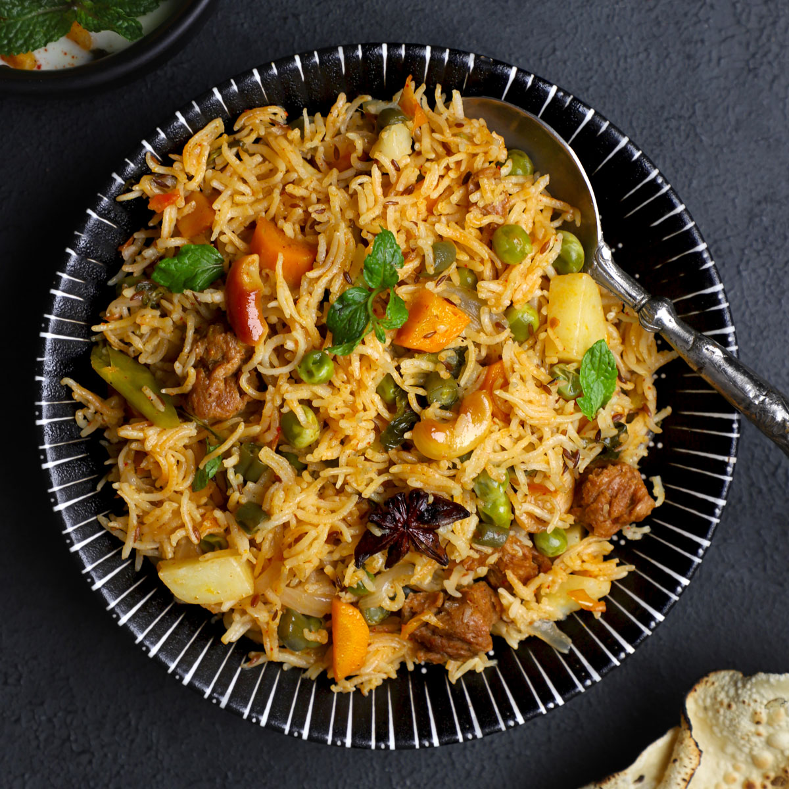

Fragrant Indian veggie rice dish

"Also called Vegetable Pulao: A fragrant, one-pot Indian rice dish cooked with whole aromatic spices and fresh vegetables.
Ingredients:
Serving for 4 person
- 1.5 cups Rice (white or preferred one)
- 2 tablespoons Clarified butter (ghee) or oil (preferred one)
- 1 Bay leaf
- 1-inch cinnamon stick
- 2 green cardamom pods
- 3 cloves
- 1 medium sliced onion
- 1 teaspoon ginger-garlic paste
- 1/2 cup chopped tomatoes
- 1 cup mixed vegetables (carrots, beans, peas, potatoes, cauliflower)
- 3 cups water
- Salt to taste
Instructions:
- Soak the rice: Rinse 1.5 cups of rice in water until clean. Soak it in water for 20 to 30 minutes, then drain.
- Saute the spices: Heat 2 tablespoons of clarified butter (ghee) in a heavy-bottomed pan. Add the bay leaf, cinnamon, cardamom, and cloves. Cook for a few seconds until fragrance from spices are released.
- Cook aromatics: Add the sliced onions and cook until golden brown. Add the ginger-garlic paste and stir for 30 seconds.
- Add vegetables: Add the chopped tomatoes and cook for 2 minutes. Add the mixed vegetables and gree peas. Saute for another 2 minutes.
- Add rice and water: Gently mix in the drained rice and saute it for 1 minute. Pour in 3 cups of water and add salt.
- Simmer: Bring the water to a boil, then lower the heat. Cover the pan with a tight lid and cook for 15 minutes until the water is gone.
- Rest and serve: Turn off the heat and let it rest covered for 10 minutes. Fluff the rice gently with a fork and serve hot.
Back to Home